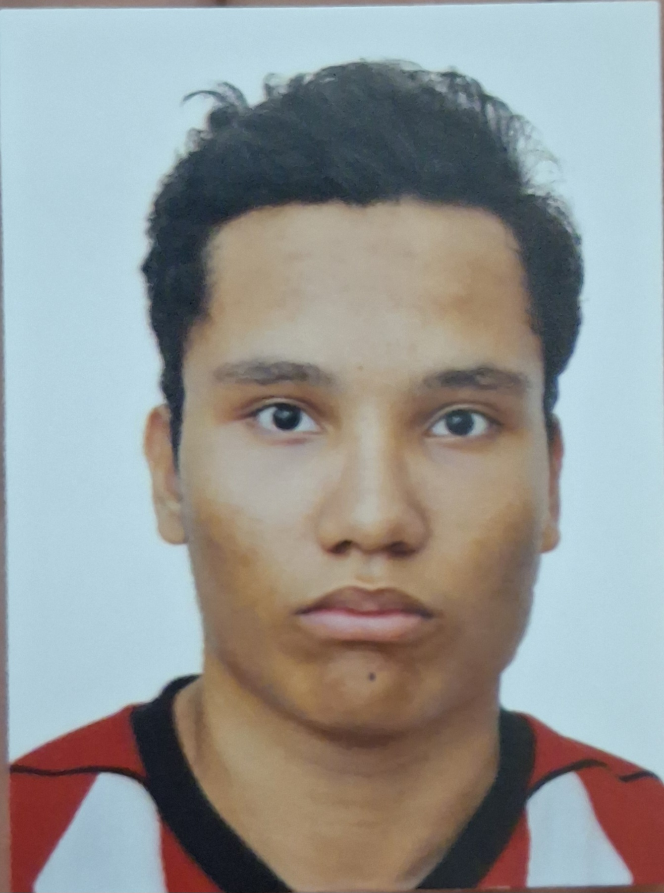

Nome: Oliver Robert De Oliveira
Idade: 19 Anos
Localização: Uberlândia, MG
Resumo: Sou Aluno Do IFTM Uberlândia Campus Centro Do Primeiro Periodo Em Sistem Para Internet
Ja Estudei Em Escolas Publicas Como Jacy De Assis Alice Paes E O Museu Recentemente Considerado o aluno destaque do Museu em 2024.
E Terminou o Ensino Medio em 2025
Gostar Video Games E Fazer Esporte De Artes Marciais:
Aqui estão três links que considero fascinantes para o conhecimento humano:
© 2026 - Desenvolvido por Oliver Robert De Olivera IFTM